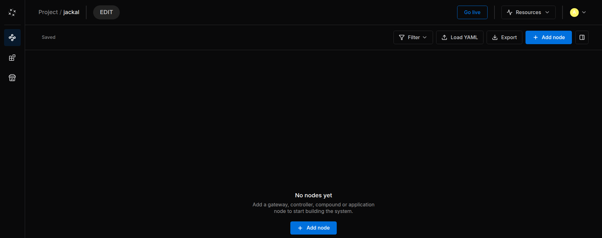

Stellar Station¶
Every Robot System is one Stellar Station ("the Station"). In the Station you build the robot system as a graph of nodes, give the nodes their documents, start them, and watch their state and logs. This manual describes the Station opened from the Sodero Cloud portal; device versions may differ.
What a Robot System Is¶
A Robot System holds one Station and everything it needs:
| Part | What it is |
|---|---|
| Node graph | Gateways, controllers, compounds and applications, and the connections between their ports (Build the Graph) |
| Documents and settings | Gateway and robot documents, camera files, map bundles and node settings (Documents and Settings) |
| Apps and modules | The Store apps and your own module packages that the nodes run (Apps and Packages) |
A Robot System drives robots in the project's active Robot World (Drive Robots in the World). You create it on the project page (Robot Systems and Robot Worlds). Nodes, ports and node types are explained in Key Concepts.
1. Open the Station¶
On the project page, the Robot System's Actions column holds the link:
- Station · Edit while the Robot System is inactive. It opens the Edit page.
- Station · Live while it is active. It opens the Live page; opening it does not start any node.
The Station opens in a new browser tab and uses your portal sign-in. The header shows the project and the Robot System, for example Warehouse Demo / jackal. People with Can view can open both pages, but every control that changes something is disabled for them (Project Access and Roles).
Edit and Live¶
The Station has two pages for the same Robot System:
| Edit page | Live page | |
|---|---|---|
| Badge | EDIT | LIVE, with how long the Station has been live |
| The Station | Inactive: nothing runs and no credits are used | Active: it uses credits (Credits and Usage) |
| What you can do | Add, connect, rename and delete nodes; set parameters; select Store apps | Upload controller documents while their nodes are stopped, start nodes, read their logs and open the operator UIs |
| Button | Go live | Stop live |


- Go live activates the Station, like Active in the portal's Activation column. A banner follows the start, and Cancel stops it. When the Station is ready, usually after about a minute, the tab moves on to the Live page by itself.
- Stop live asks first: Every node stops and the system goes back to edit mode. Nodes and connections stay saved. It deactivates the Station, like Deactivate in the portal, and the tab returns to the Edit page.
- When someone else activates the Station while you are on the Edit page, your tab moves on to the Live page as well.
2. Screen Layout¶
| Area | Contents |
|---|---|
| Header | Project and Robot System, the EDIT or LIVE badge, Go live or Stop live, Resources, and the people who have the Station open |
| Left rail | Runtime (the graph), Modules and Store (Apps and Packages); at the bottom Notifications, Help and your account |
| Toolbar | The save state (Saved), Filter, Load YAML, Export and Add node. The Live page adds Package and Start all nodes, and Adopt running when something runs that the graph does not show. The last button shows or hides the inspector. |
| Canvas | The node cards and their connections. At the bottom: zoom, Fit view, Auto layout, and folding or unfolding all cards. |
| Inspector | The selected node: name, module and state, Connection, Parameters and settings, Logs (Live page only) and Activity |
The Sodero mark at the top left opens the Station menu: Back to Sodero Cloud, Libraries (My Library, Project Library), Theme (Midnight or Twilight), Help & Feedback and About Stellar Station.
Tip: Right-click the empty canvas to add a node, and right-click a node for its actions.
3. What Is Saved Where¶
| What | Where it is kept |
|---|---|
| Changes to the graph | Saved automatically on both pages. The toolbar shows Saving…, then Saved; if a save fails, it shows Retry save. Changes made on the Live page stay after Stop live. |
| Documents and settings | With the Robot System. The Station saves them when it is deactivated and restores them when it is activated. Upload robot documents from the Live page (Documents and Settings). |
| Store apps and your modules | Recorded with the Robot System and installed each time the Station starts (Apps and Packages) |
| The whole Robot System | Download local copy on the project page saves it as an .sdr file (Download a Local Copy) |
Export in the toolbar saves the graph only, not the documents or apps (Load and Export the Graph).
4. Resources¶
Click Resources in the header to see the Station's CPU, RAM and GPU load. The bars turn amber at 70 % and red at 85 %. — means that no value is reported; on the Edit page every value is — (Usage appears once the system is live.). View details opens the system monitor.
Sodero Cloud gives each Station its own share of CPU and memory. The project page also shows the Station's use in its Resource column; hover over it for the Station's CPUs and its memory limit (The Project Page). When a Station runs close to its limits, give it fewer nodes, for example by putting each robot in its own Robot System.
5. What You Do on the Station¶
flowchart LR
A["Select apps"] --> B["Add and connect nodes"]
B --> C["Go live"]
C --> D["Upload and confirm documents"]
D --> E["Run World and start nodes"]
E --> F["Open the operator UI"]| Step | Page |
|---|---|
| Install the apps that your nodes run | Apps and Packages |
| Add nodes and connect their ports | Build the Graph |
| Give the nodes their documents and settings | Documents and Settings |
| Start nodes, read their state and logs | Run and Monitor |
| Connect the robots to the World | Drive Robots in the World |
| Drive and teach the robots | Strider, Motion Studio, Articulation |
For a first walkthrough with a simulated robot, follow the Quick Start.